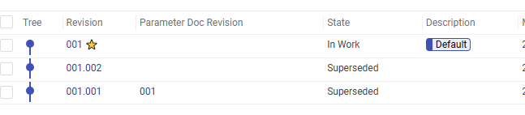

Minerva#
The SAF SDK gives you the ability to use a remote Ansys Minerva instance as a data repository in a seamless manner. Among other Minerva benefits, this provides a centralized storage, controlled data access, efficient data handling, integration with other PLM/PDM systems, consolidated insights, etc.
Warning
The data repository feature only works with files using BDM through the usage of EntityHandle.
(for more information on BDM, see work with files using BDM)
Overview#
Within a @transaction method, you can access the self.data_repository member that allows:
The creation of files or directories at specific target paths in the data repository.
Querying and downloading existing files or directories in the data repository.
Note
Alternative data repositories will be implemented, but for now, only Minerva is supported.
Prerequisites#
Access to a Minerva instance
Ansys Minerva Generic Connector (Minerva CLI)
The Ansys Minerva Generic Connector can be downloaded from the Minerva instance URL by clicking on the top-right “AA” menu > “Tools” > “Ansys Minerva Generic Connector” or “Ansys Minerva Generic Connector (Linux)”. For more information, you can refer to the specific Minerva documentation.
It requires to manually add ansys-minerva-python-client as a dependency in your solution’s pyproject.toml file.
Configuration#
In order to use Minerva as a data repository, you must set the GLOW_DATA_REPOSITORY_TYPE environment variable to Minerva.
It also requires environment variables ANS_MINERVA_URL and ANS_MINERVA_CLI to be set, pointing to the Minerva server and to the Minerva CLI executable. Examples:
ANS_MINERVA_URL=http://localhost/AnsysMinerva
ANS_MINERVA_CLI=C:\\Program Files\\ANSYS Inc\\Ansys Minerva\\AnsysMinerva_CLI.exe
It’s important that the ANS_MINERVA_URL has the format from the example, without the /Client suffix.
By default, files and directories will be uploaded to /Data. If you want to specify another default path, you can set the GLOW_DATA_REPOSITORY_UPLOAD_ROOT with another absolute path.
Download and install Ansys Minerva CLI#
The Ansys Minerva CLI is the tool used to communicate with the Minerva server. Follow these steps to download and install it:
Access the Minerva instance URL and click on the top-right “AA” menu → Tools → Ansys Minerva Generic Connector.
Run the downloaded
.msiinstaller.
Access the Minerva instance URL and click on the top-right “AA” menu → Tools → Ansys Minerva Generic Connector (Linux).
Execute the downloaded
.shfile:./ansysminerva-cli.sh --noexec --target <output_dir>
Navigate to
<output_dir>and run:./install-ansysminerva.sh --accept-license
Note
The installation process automatically adds the environment variable ANS_MINERVA_CLI pointing to the installed Ansys Minerva CLI executable.
On Linux, make sure the executable has execute permissions.
Minerva authentication#
Regarding authentication, refer to Minerva authentication section for the available options.
Store a file into the data repository#
To upload a file or directory to the data repository, simply use the upload method provided on self.data_repository within a @transaction.
This method has the following signature:
def upload(
entity_handle: EntityHandle,
target_path: str | None = None,
metadata: str | None = None,
) -> EntityHandle: ...
It uploads a file or directory referenced by an EntityHandle, and stores it into the data repository.
It returns a new EntityHandle referencing the uploaded file or directory in the data repository.
The method has an optional
target_pathargument which indicates the location where the file/folder will be uploaded in the data repository. If specified, it can be either absolute or relative. Absolute paths (for example/Data/folder/my_file.txt) will upload the handle at the specified location on the data repository. Relative paths (for examplefolder/my_file.txt) are relative to the data repository’s project directory, so the handle will be uploaded into a dedicated directory containing the project’s name. For exampletarget_path=folder/my_file.txtwill be translated to/Data/project_name (project_id)/folder/my_file.txt, where/Datais the default value ofGLOW_DATA_REPOSITORY_UPLOAD_ROOT. By default, whentarget_pathis omitted, the destination is derived from the handle data source. For example if the file is located inself.storage_scope.get_storage_root() / "dir" / "my_file.txt"then the relative path of the filedir/my_file.txtbecomes the target path. As this target path is relative, the target path will refer to a location within the project directory in the data repository. The final destination will be/Data/project_name (project_id)/dir/my_file.txt.The optional
metadatastring argument contains metadata that augments the entity being uploaded in the data repository. In Minerva, the metadata string must meet the following criteria:It must be a valid XML.
It must contain a single
<file role="subject"/>element (as the first child of the root<section>) referencing the associated file.It only applies to files.
For more information: you can refer to the following Minerva sections:
Uploading Metadata while Uploading Files explains what is a valid XML content.
Parameter Document Schema describes the schema with some examples.
Creating Parameter Documents shows how to create metadata using an UI tool.
Note
If a file already exists at the target location, and the supplied handle refers to a file, then a new version of the file is created in the data repository and the method returns a handle referring to the new version.
If a directory exists at the target location and the supplied handle refers to a file, then an exception is thrown.
If a file already exists at the target location and the supplied handle refers to a directory, then an exception is thrown.
Upload examples#
In the following snippet, an entity handle is uploaded into the remote data repository using various target_path.
The EntityHandle is first created by executing store_my_file_handle(), then the handle referencing my_file.txt is uploaded to the data repository using one of the following methods.
my_file_handle: EntityHandle = NO_ENTITY
@transaction(self=StepSpec(upload=["my_file_handle"]))
def store_my_file_handle(self):
"""Create a file and persist it in the solution using an EntityHandle."""
filepath = self.storage_scope.get_storage_root() / "my_file.txt"
filepath.write_text("some data")
self.my_file_handle = self.storage_scope.store(filepath)
@transaction(self=StepSpec(download=["my_file_handle"]))
def upload_file_to_data_repository(self):
"""Upload my_file.txt to /Data/project_name (project_id)/my_file.txt"""
self.data_repository.upload(self.my_file_handle)
@transaction(self=StepSpec(download=["my_file_handle"]))
def upload_file_to_absolute_path_data_repository(self):
"""Upload my_file.txt to /Data/my_folder/file.txt"""
self.data_repository.upload(self.my_file_handle, target_path="/Data/my_folder")
@transaction(self=StepSpec(download=["my_file_handle"]))
def upload_file_to_relative_path_data_repository(self):
"""Upload my_file.txt to /Data/project_name (project_id)/file.txt"""
self.data_repository.upload(self.my_file_handle, target_path="file.txt")
@transaction(self=StepSpec(download=["my_file_handle"]))
def uploading_file_with_metadata_to_data_repository(self):
"""Upload my_file.txt with some custom metadata, to the data repository"""
metadata = """
<section>
<file role="subject" src="my_file.txt" creator="test" appVersion="test_version"/>
<text name="my_name" value="my_value"/>
</section>
"""
self.data_repository.upload(self.my_file_handle, metadata=metadata)
A more extensive example involving fluent:
user_selection_handle: EntityHandle = NO_ENTITY
@transaction(self=StepSpec(download=["user_selection_handle"]))
@instance("fluent")
def simulate_and_store_result_to_data_repository(self, fluent: Fluent3DDPSolverManager):
input_file = fluent.storage_scope.get_cached(self.user_selection_handle)
fluent.instance.read_case(str(input_file))
fluent.instance.tui.solve.initialize.initialize_flow()
max_temperature_filepath = fluent.storage_scope.get_storage_root() / "max-temperature.out"
fluent.instance.tui.solve.report_files.add(
"max-temperature",
"report-defs",
"max-pad-temperature",
"max-disc-temperature",
"()",
"file-name",
str(max_temperature_filepath),
)
result_handle = fluent.storage_scope.store(max_temperature_filepath)
self.data_repository.upload(result_handle)
Note
Remember that the BDM system is designed to support separate file systems and/or different OS systems between the product (in this case Fluent) and the SAF GLOW Engine method execution environment.
This means that the values of input_file and max_temperature_file_path are OS file paths that are correct for the product instance but are not necessarily resolvable by the OS executing the transaction method code shown.
Access files from the data repository#
To access a file or directory from the data repository, simply use the get_entity_handle method provided on self.data_repository.
This method has the following signature:
def get_entity_handle(target_path: str, version: str | None = None) -> EntityHandle: ...
It returns an EntityHandle referencing the data stored at the target path on the remote data repository.
If the requested target path does not exist, NO_ENTITY is returned.
target_pathfollows the same semantic as theuploadmethod and can be either relative or absolute.The optional
versionargument indicates which version of the file must be retrieved. It follows the following pattern: three digit for the major revision, optionally followed by a dot and three digits for the minor revision. (For example:001or001.003)You can check the versions in the Minerva UI, by clicking on
rev:
If the version identifier is not supplied, then the latest version is returned.
For more information on versioning, you can read Minerva’s documentation here.
Note
Minerva supports multiple branches, but currently, the data repository only supports the default branch.
Examples#
In the following snippets, get_entity_handle is used to access the data from the data repository.
Since this method is returning an EntityHandle, any method and property described from BDM Python API can be used.
@transaction(self=StepSpec())
def read_data_repository_file_using_relative_path(self):
"""Read content of my_file.txt from /Data/project_name (project_id)/my_file.txt"""
minerva_handle = self.data_repository.get_entity_handle("my_file.txt")
content = self.storage_scope.get_text(minerva_handle)
...
@transaction(self=StepSpec())
def read_data_repository_file_using_absolute_path(self):
"""Read content of my_file.txt from /Data/my_file.txt"""
minerva_handle = self.data_repository.get_entity_handle("/Data/my_file.txt")
local_filepath = self.storage_scope.get_cached(minerva_handle)
content = local_filepath.read_text()
...
@transaction(self=StepSpec())
def read_first_version_of_data_repository_file(self):
"""Read the first version of my_file.txt"""
minerva_handle = self.data_repository.get_entity_handle("my_file.txt", version="001")
v1_content = self.storage_scope.get_text(minerva_handle)
...
@transaction(self=StepSpec())
def read_second_version_of_data_repository_file(self):
"""Read the second revision of my_file.txt"""
minerva_handle = self.data_repository.get_entity_handle("my_file.txt", version="001.002")
v2_content = self.storage_scope.get_text(minerva_handle)
...
@transaction(self=StepSpec())
def list_data_repository_folder_children(self):
"""List direct children of the folder from /Data/my_folder"""
minerva_handle = self.data_repository.get_entity_handle("/Data/my_folder")
children = self.storage_scope.get_children(minerva_handle)
...
@transaction(self=StepSpec())
def get_parent_from_data_repo_file(self):
"""Get the entity handle from /Data/folder, using the parent of /Data/folder/my_file.txt"""
minerva_handle = self.data_repository.get_entity_handle("/Data/folder/my_file.txt")
folder_handle = self.storage_scope.get_parent(minerva_handle)
...
Query files from the data repository#
To query files or directories from the data repository, simply use the query method provided on self.data_repository.
This method has the following signature:
def query(self, value: str) -> list[EntityHandle]: ...
It queries items at the data repository based on the input value string and returns a list of handles pointing to the entities that fulfill such query.
Note
Minerva uses the Adaptive Markup Language (AML) for the query value, and therefore requires knowledge of AML.
For more information on AML search, you can read the documentation here.
Examples#
In the following snippet, query is used to search for items in the data repository.
@transaction(self=StepSpec())
def query_files_with_matching_pattern_on_data_repository(self):
"""Search items in Minerva using AML-based queries."""
query_value = """
<Item type="Ans_Data" action="get" page="1" select="name" pagesize="100" maxRecords="" returnMode="itemsOnly">
<name condition="like">my_file.txt</name>
</Item>
"""
matching_minerva_handles = self.data_repository.query(query_value)
first_matching_content = self.storage_scope.get_text(matching_minerva_handles[0])
...
Use the file system as data repository for development#
In addition to the Minerva implementation of the data repository interface, the SAF SDK provides a mock implementation using the local file system. The file system mock implementation mimics Minerva data repository, except that it stores files and folders locally. Its goal is to give the possibility to try and develop your solution using a data repository, without having to deploy a full Minerva instance. It must be used solely for tests and development.
Configuration#
In order to use the file system as a data repository, you must set the GLOW_DATA_REPOSITORY_TYPE environment variable to FileSystem.
Differences#
The file system mock data repository behaves mostly the same as Minerva data repository, but few differences exist.
Upload#
Obviously, the files are not stored on a remote server, but locally in a “filesystem” folder located within the project files.
Query#
In order to be able to use the same queries as Minerva, you need to configure the solution with a dictionary mapping the query strings to the associated target paths. The query method will then simply look up the result of the query in the configured dictionary whose values are lists of target paths in the repository.
The following example demonstrates how to configure the solution so that an AML query searching for my_file* will match the specified files.
class FileSystemQueryMapSolutionConfiguration(SolutionConfiguration):
solution_schema_version: int = 1
query_value = """
<Item type="Ans_Data" action="get" page="1" select="name" pagesize="100" maxRecords="" returnMode="itemsOnly">
<name condition="like">my_file*</name>
</Item>"""
filesystem_data_repository_query_map: dict[str, list[tuple[str, str]]] = {
query_value: [
("folder/my_file1.txt", "001"),
("folder/my_file2.txt", "001"),
("folder/subdir/my_file3.txt", "001"),
("folder/nested_subdir_same_name/folder/my_file4.txt", "001"),
("folder/nested_subdir_same_name/folder/my_file5.txt", "001"),
],
}
class DataRepositorySolution(Solution):
display_name: str = "DataRepository"
steps: Steps
solution_configuration: FileSystemQueryMapSolutionConfiguration = FileSystemQueryMapSolutionConfiguration()
File major version#
The file system mock data repository only supports 001 as the major file version, so the versions of a file will always be 001.*.
Known limitations#
Branch versioning is not supported (except default).
Folder versioning is not supported.
Concurrency issues: avoid having simultaneous transactions pushing/getting data.